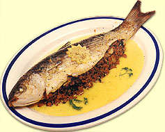

Pour 4 personnes:
Préparation : 10 mnCuisson : 50 mn
25 cl de blanc de kiwi
1 mulet de 1 kg
6 échalotes
150 g de chair à saucisses
1 oeuf entier + 1 jaune
25 g d'amandes effilées
1 bouquet de persil
3 cuil. à soupe de crème fraîche épaisse
1 cuil. à soupe d'huile
sel, poivre du moulin
Demandez à votre poissonnier de préparer le mulet en
portefeuille.
Lavez et épongez
le persil, hâchez-le. Pelez les échalotes et coupez-les
en fines rondelles.
Dans une poêle,
faites chauffer l'huile. Dorez-y les rondelles d'échalote
à feu moyen pendant 5 mn en les remuant. Ajoutez la chair
à saucisses et le persil hâché. Poursuivez la
cuisson 5 mn en écrasant la chair avec une fourchette afin
de bien la détacher. Laissez refroidir cette farce.
Ajoutez à la farce
froide l'oeuf entier, les amandes et du poivre. Étalez cette
farce sur une moitié du mulet, repliez l'autre moitié
par-dessus la farce. Posez le mulet sur un plat, salez et poivre.
Versez dessus le blanc de kiwi.
Faites cuire à
four chaud (210° C, thermostat 7) pendant 40 mn, en arrosant
de temps en temps le mulet avec le vin.
Délayez la crème
avec le jaune d'oeuf et versez cette sauce sur le mulet en fin de
cuisson. Servez bien chaud.
Vous trouverez le blanc
de kiwi dans les épiceries fines.